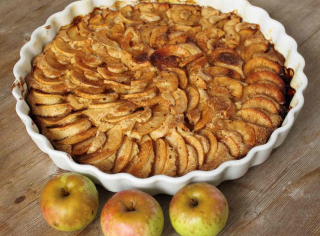

Назад
Шарлотка с яблоками
Быстро

50 мин (ваши 20 мин)

8 порций

50 мин (ваши 20 мин)
8 порций
Ингридиенты:
Яблоки (желательно кислые) - 500-600 г
Сахар - 160 г
Мука пшеничная - 160 г
Яйца - 4 больших или 5 маленьких
Соль - 1 щепотка
Пошаговый рецепт
- Подготовьте продукты по списку.
- Взбить яйца с сахаром и щепоткой соли в светлую густую массу. Чтобы убедиться, что масса уже хорошо взбилась, проведите линию венчиком. Если она остаётся видимой в течение 1-2 секунд, а потом растекается, то яйца с сахаром уже хорошо взбиты. Если же она сразу растекается, то нужно взбивать еще.
- Подготовить яблоки, вырезать из них середину, нарезать слайсами (или кубиками).
- Муку частями просеивать в яично-сахарную смесь и аккуратно перемешивать лопаткой движениями снизу вверх. С бисквитным тестом нужно работать осторожно, чтобы сохранить по максимуму его воздушность. (Также на этом этапе можно добавить в тесто 1 ст. ложку жирной сметаны или 1 ст. ложку растопленного сливочного масла - таким образом, пирог будет влажнее.)
- Форму (диаметр - 22 см) выстелить пергаментом или смазать сливочным маслом, припылить мукой. Вылить 1/2 часть теста, разровнять.
- Половину яблок, нарезанных дольками, выложить на тесто. Начинаем выкладывать дольки от бортиков и двигаемся по спирали прямо к середине.
- Сверху залить оставшимся тестом и таким же образом выложить оставшиеся яблоки. Также на этом этапе вы можете присыпать пирог корицей, если любите, конечно.
- Если нарезать яблоки кубиками, то можно их добавить в тесто, аккуратно перемешать и потом выложить всю массу в форму для выпекания.
- Выпекать яблочную шарлотку в течение 20-30 минут при температуре 180 градусов. Готовность можно проверить деревянной шпажкой.